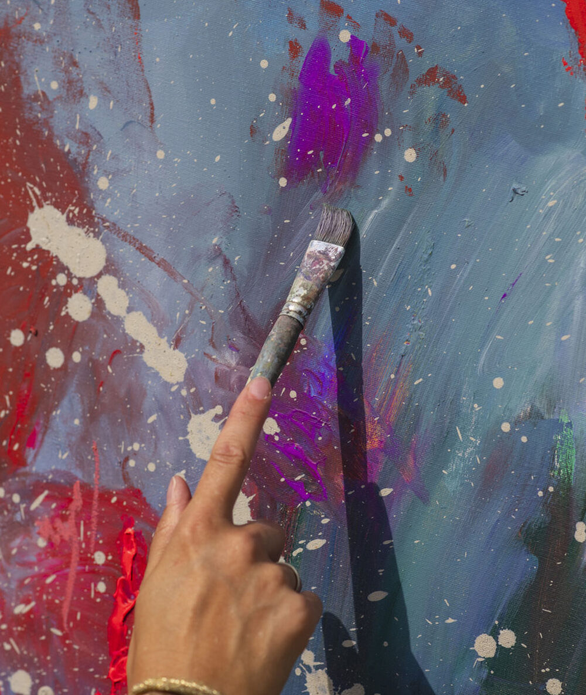
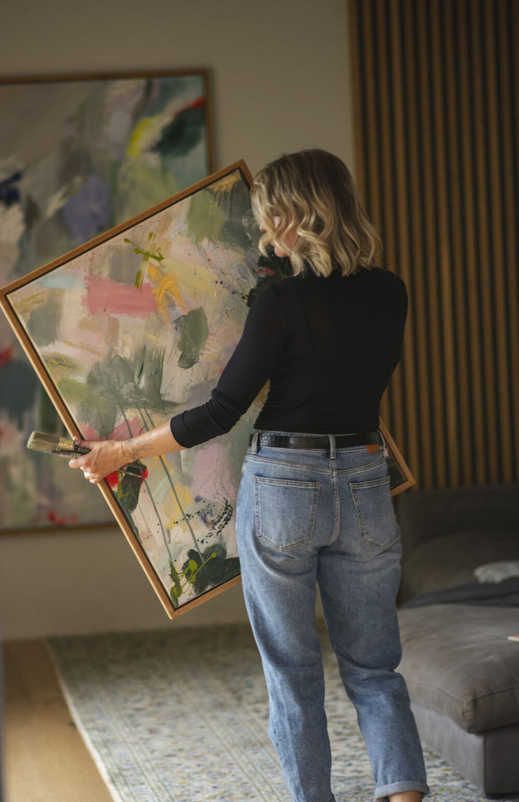
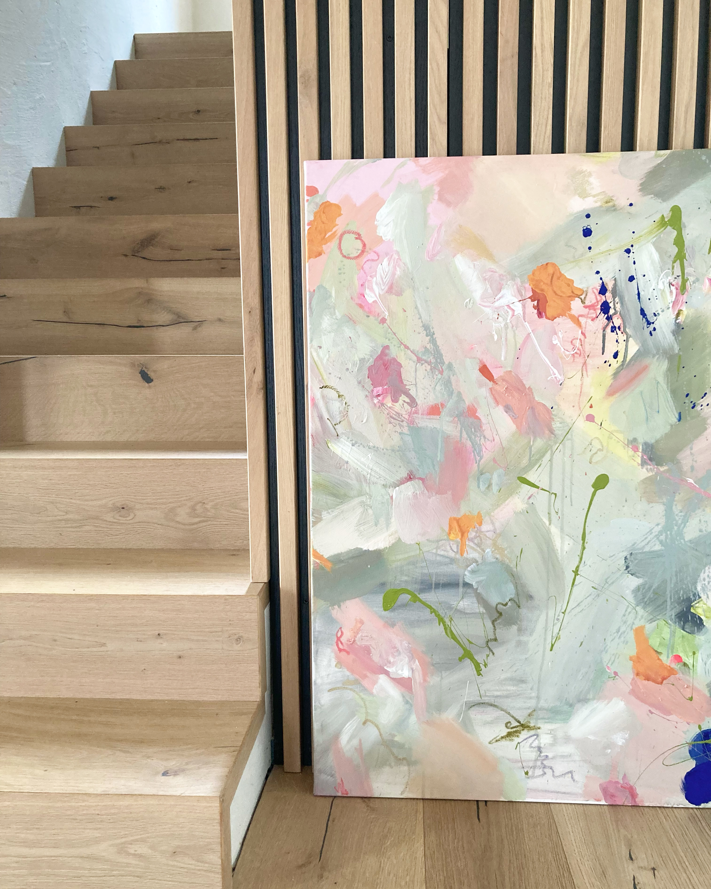
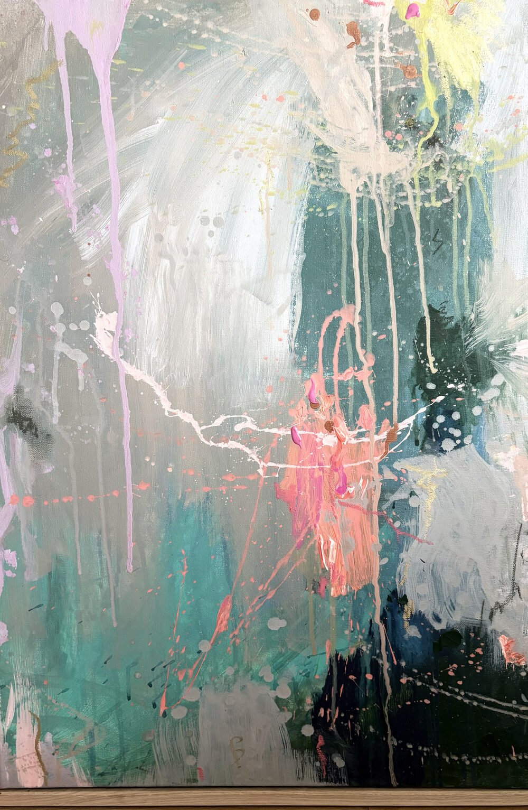
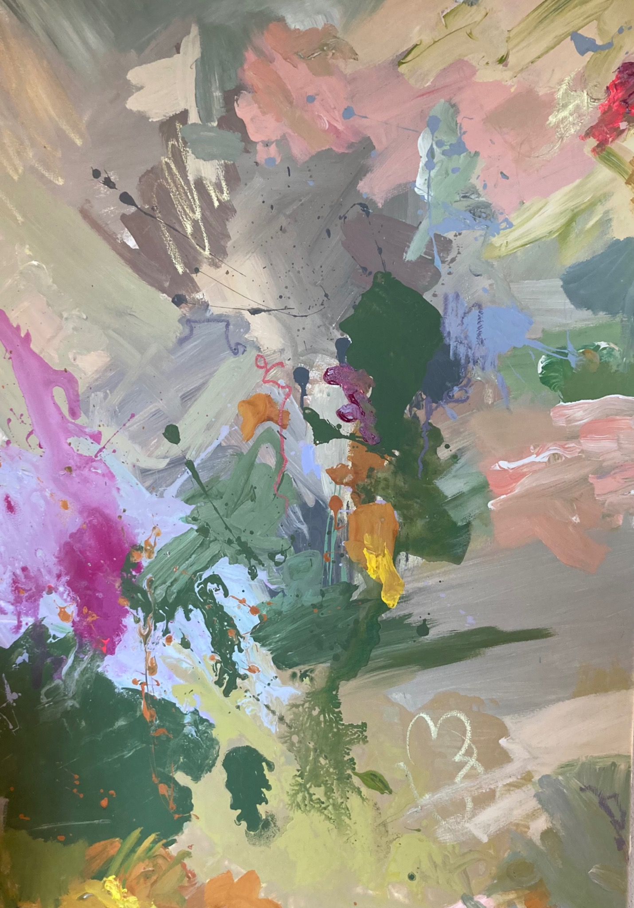
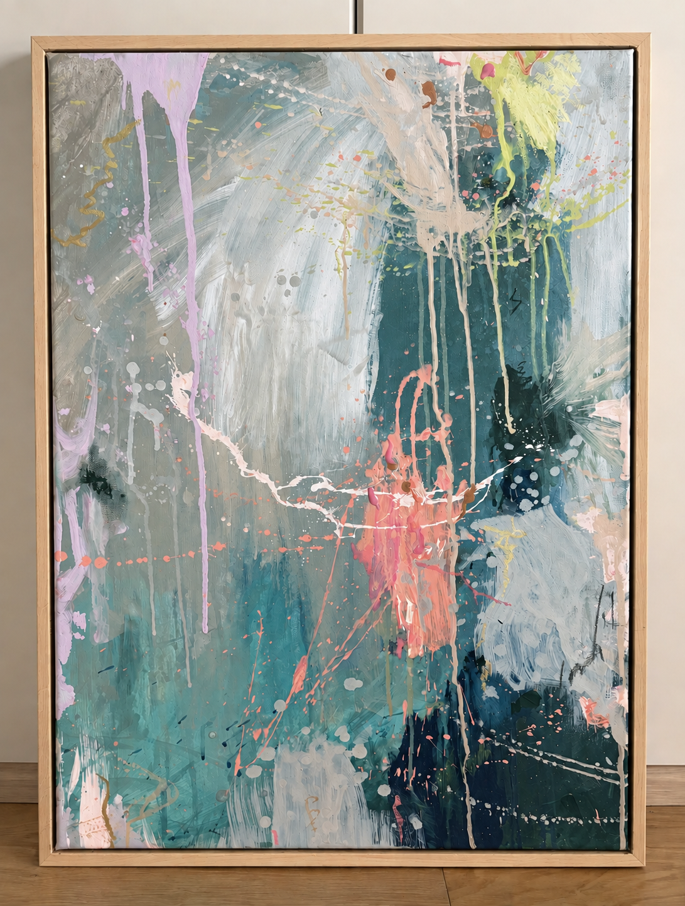

Fine Art
Painting

Kunst gibt Gefühlen, Gedanken und Geschichten eine Form. Sie schafft Raum für Ausdruck, Persönlichkeit und Verbindung – und macht sichtbar, was oft schwer in Worte zu fassen ist.
Seit meiner Kindheit male ich – auf großen Leinwänden und kleinen Formaten, farbenfroh oder reduziert, alleine oder manchmal mit kleinen oder großen helfenden Händen. Ich liebe die Freiheit im Tun: nicht zu wissen, was entsteht, zu experimentieren und zu kreieren. Und das Vertrauen, den Prozess wirken zu lassen.
Manchmal sucht sich ein Bild seinen Platz. Manchmal braucht ein Platz aber auch ein individuell dafür gestaltetes Bild. So entstehen freie Arbeiten ebenso wie persönliche Auftragswerke – Bilder, die Räume das gewisse Etwas geben, Geschichten erzählen und eine besondere Stimmung schaffen.
Mit meinem Konzept „YOUR ART“ kannst du sogar Teil deines eigenen Kunstwerkes werden. Mit bis zu fünf Personen jeden Alters male ich gemeinsam. Es braucht keine Vorkenntnisse, sondern nur Freude am Ausdruck und den richtigen Rahmen. Das Ergebnis ist eure Geschichte – übersetzt in ein Bild, das euch zuhause an einem besonderen Platz jeden Tag Freude bereiten darf.
Dieses Konzept biete ich auch für Unternehmensteams an, wo nicht nur das Malen sondern die Auseinandersetzung mit der Unternehmensidentität und der Entstehungsprozess im Mittelpunkt steht.
„Wo Kunst einzieht, beginnt der Raum zu erzählen.“





